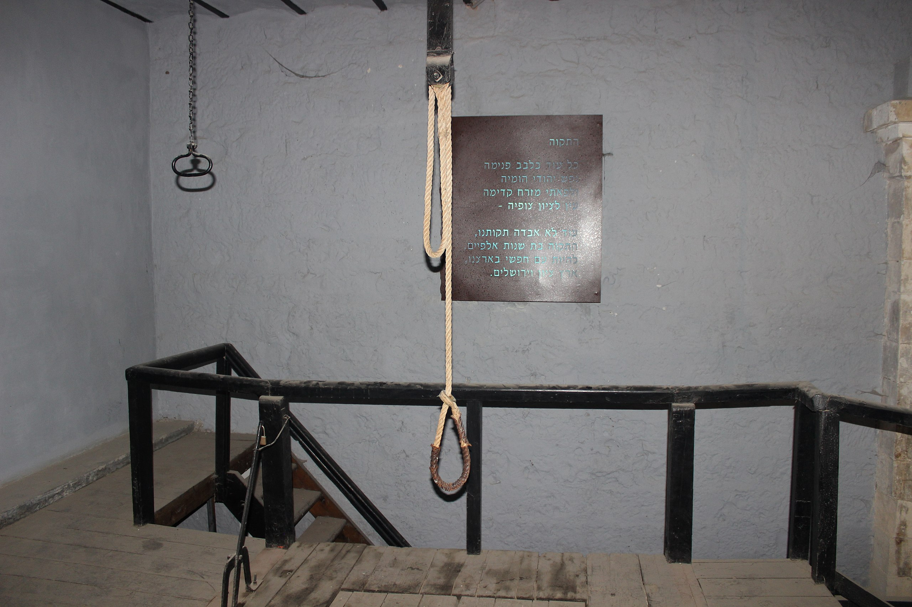
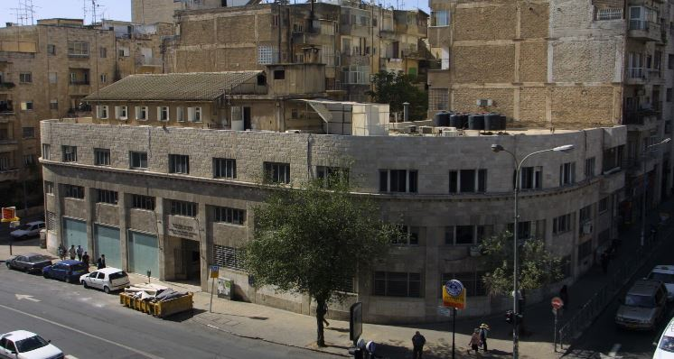

שכונות מרכז העיר בירושלים
אודות השכונות
שכונות אלו הוקמו מחוץ לחומות העיר העתיקה כחלק מתהליך היציאה מהחומות. בתקופה בה שלטה הממלכה הירדנית, פה מעבר לגבול, שגשגו פה קהילות שהיו ללב ליבה של ירושלים. כשאנחנו מתחברים לירושלים לעומק, חייבים להכיר את השכונות האלו, להבין את התרבות והמנהגים, ולדעת מנין התפתחה העיר. היעדים שלנו היום הם אוסף של מקומות המייצגים תקופות שונות של האיזור וחוויות שונות מאוד, על ממש מטרים בודדים. מקווים שתהנו! 😊
מרכז העיר ירושלים
היסטוריה ומאפיינים
שכונת מרכז העיר ירושלים היא אחת מהשכונות המרכזיות והוותיקות ביותר בעיר. השכונה מהווה את המרכז התרבותי, המסחרי והמנהלי של ירושלים, ומשמשת כמוקד לפעילויות רבות ומגוונות.
היסטוריה
מרכז העיר התפתח לאורך השנים סביב אזורי המסחר והתעשייה של ירושלים. השכונה החלה להתפתח במאה ה-19 עם בניית בתי מגורים, מבני ציבור ומרכזי מסחר. במהלך השנים התווספו מבנים מרכזיים רבים לשכונה, כולל בתי ממשלה, בנקים, ומבני תרבות חשובים.
אטרקציות ופעילויות
מרכז העיר ירושלים מציע מגוון רחב של אטרקציות ופעילויות לכל הגילאים. בין האטרקציות המרכזיות ניתן למצוא את שוק מחנה יהודה, שדרות ממילא, כיכר ספרא והעיר העתיקה. האזור מלא בבתי קפה, מסעדות, חנויות בוטיק, גלריות אמנות ומועדוני תרבות.
תחבורה וגישה
מרכז העיר ירושלים הוא נגיש מאוד וכולל תחבורה ציבורית מגוונת. הקו האדום של הרכבת הקלה עובר בלב השכונה ומקשר אותה עם שאר חלקי העיר. בנוסף, ישנם קווי אוטובוס רבים העוברים בשכונה ומשאירים את השכונה נוחה להגעה מכל מקום בירושלים.
חשיבות תרבותית
מרכז העיר ירושלים מהווה מקום מרכזי בחיי התרבות והקהילה של העיר. השכונה משמשת כמקום מפגש לתושבים, תיירים ומבקרים ומארחת אירועים רבים לאורך כל השנה, כולל פסטיבלים, קונצרטים ותערוכות.
עריית ירושלים

בניין עריית ירושלים
היסטוריה ומאפיינים
בניין עריית ירושלים הוא אחד מהמבנים המרכזיים בעיר ירושלים ומשמש כמרכז הנהגתה המוניציפלית של העיר. הוא ממוקם בכיכר ספרא ומשמש כמוקד הפעילות המנהלית של עיריית ירושלים.
היסטוריה
בניין עריית ירושלים הוקם בשנת 1930 בתכנונו של האדריכל הבריטי קליפורד הולידיי, כחלק מהמאמצים הבריטיים לשדרג את התשתיות המוניציפליות של ירושלים. במהלך השנים, הבניין עבר שינויים ושיפוצים רבים על מנת להתאים אותו לצרכים המשתנים של העיר המודרנית.
תפקיד ומאפיינים
בניין עריית ירושלים משמש כמקום מושבה של המועצה העירונית של ירושלים ושל הנהלת העירייה. בנוסף, הוא כולל משרדים רבים שמספקים שירותים שונים לתושבי העיר. המבנה הוא סמל למערכת השלטונית המקומית והינו חלק מהמורשת האדריכלית של ירושלים.
לקריאה נוספת
מוזיאון אסירי המחתרות

מוזיאון אסירי המחתרות
היסטוריה ומאפיינים
מוזיאון אסירי המחתרות בירושלים שוכן בבניין שבו הוחזקו בעבר אסירי מחתרות על ידי שלטונות המנדט הבריטי. מוזיאון זה מציג את סיפורם של אסירי המחתרות ומאבקם למען חירות העם היהודי.
היסטוריה
הבניין ששוכן בו המוזיאון נבנה בשנת 1860 ושימש במקור כמנזר. במהלך המנדט הבריטי הפך למרכז מעצר לאסירי מחתרות כמו האצ"ל, הלח"י וההגנה. המוזיאון הוקם בשנת 1991 על מנת לשמר ולהנציח את זכר האסירים.
תצוגות ותערוכות
המוזיאון מציג תצוגות ותערוכות המתארות את תנאי המעצר, את סיפורי האסירים ואת מאבקם למען השחרור. בנוסף, המוזיאון מציע סיורים מודרכים וסרטונים הממחישים את סיפורם של הלוחמים.
לקריאה נוספת
בית אצ"ג

אורי צבי גרינברג
חייו ויצירתו של המשורר הדגול
אורי צבי גרינברג היה אחד מהמשוררים החשובים והמשפיעים ביותר בישראל. הוא נולד בשנת
1896
בגליציה (כיום אוקראינה) ונפטר בשנת 1981 בישראל. גרינברג היה ידוע בסגנונו הלירי והמודרניסטי והיה חלק מהקבוצות הספרותיות החשובות של התקופה.
שירתו
גרינברג כתב רבות על חוויותיו האישיות, הניסיון היהודי, הציונות והשואה. הסגנון שלו היה אינטנסיבי ופואטי, ולא פעם נחשב לפרובוקטיבי בשל נושאים פוליטיים וחברתיים שהעלה בכתביו.
השפעתו הפוליטית
גרינברג היה פעיל מאוד בתנועה הציונית והרביזיוניסטית, שהייתה תחת הנהגתו של זאב ז'בוטינסקי. הוא תמך בחזון של מדינה יהודית חזקה ובטוחה ונשאר מחויב לנושאים אלו לאורך כל חייו.
יצירות בולטות
- "רקוויאם" (על השואה)
- "הגזע" (על העם היהודי והתקומה)
- "אדום השמש בגלגלים" (ספר ילדים שבו מגולל גרינברג את חוויות ילדותו)
פרסים והוקרה
גרינברג זכה בפרס ישראל לשירה בשנת 1957. הוא היה חבר באקדמיה הלאומית הישראלית למדעים.
גרינברג השאיר אחריו יצירות שהן חלק בלתי נפרד מהקאנון הספרותי הישראלי והשפעתו על הספרות והתרבות הישראלית ניכרת עד היום.
לקריאה נוספת
בית הרב קוק

הרב אברהם יצחק הכהן קוק
חייו ויצירתו של הרב הדגול
הרב אברהם יצחק הכהן קוק, הידוע גם בשם הרב קוק, היה אחד מהמנהיגים הדתיים וההוגים החשובים ביותר בהיסטוריה היהודית המודרנית. הוא נולד בשנת 1865 בליטא ונפטר בשנת 1935 בישראל.
תורתו ופעילותו
הרב קוק היה רב ראשי לארץ ישראל והקים את ישיבת מרכז הרב בירושלים. תורתו השפיעה רבות על הציונות הדתית והוא נחשב למעצב העיקרי של הגות דתית זו. הרב קוק כתב רבות על החשיבות של חיבור בין קודש לחול ובין דת למדינה, והתייחס לציונות כחלק מתהליך הגאולה היהודית.
יצירות בולטות
- "אורות" - אחד מספריו המרכזיים שבו מתאר הרב קוק את חזונו לציונות הדתית ולעם היהודי.
- "אורות הקודש" - אוסף מכתבים ומאמרים המביעים את רעיונותיו ותפיסותיו של הרב קוק על העולם והעם היהודי.
- "אגרות הראיה" - אוסף מכתבים שכתב הרב קוק העוסקים בנושאים שונים כמו הלכה, מחשבה יהודית וענייני השעה.
פרסים והוקרה
הרב קוק זכה להכרה רבה ולהוקרה על פעלו והשפעתו. הוא הותיר אחריו מורשת רוחנית עשירה שעדיין משפיעה על החיים הדתיים והתרבותיים בישראל.
הרב קוק השאיר חותם בל יימחה על היהדות המודרנית והגותו נלמדת ונחקרת עד היום.
לקריאה נוספת
בית החולים ביקור חולים

בית החולים "ביקור חולים" בירושלים
היסטוריה ומאפיינים
בית החולים "ביקור חולים" הוא אחד מבתי החולים הוותיקים בירושלים ובישראל. הוא הוקם כדי לספק שירותי בריאות לתושבי ירושלים והאזור, והוא נודע בזכות הטיפול האיכותי והמקצועי שניתן בו.
היסטוריה
בית החולים הוקם בשנת 1826 על ידי קבוצת יהודים חרדים מאירופה. המוסד נועד להעניק שירותי בריאות לקהילה היהודית בירושלים שהתמודדה עם תנאים קשים ומחלות. בית החולים עבר שינויים ושיפוצים רבים במרוצת השנים.
שירותים רפואיים
בית החולים "ביקור חולים" מציע מגוון רחב של שירותים רפואיים, כולל מחלקות פנימיות, מחלקות כירורגיות, יחידות טיפול נמרץ ועוד. המוסד ידוע גם במחלקות היולדות והתינוקות שלו, ומספק שירותי בריאות מקיפים לקהילה.
לקריאה נוספת
המשביר הישן

רחבת המשביר הישן
היסטוריה ומאפיינים
רחבת המשביר הישן היא כיכר ציבורית מרכזית בירושלים, אשר נקראת על שם "המשביר לצרכן", שהיה אחד מהחנויות הכלבו המרכזיות של ישראל. הרחבה מהווה נקודת ציון מרכזית בעיר ומשמשת כמקום מפגש לתושבים.
היסטוריה
הרחבה נקראת על שם החנות "המשביר לצרכן" אשר הייתה ממוקמת במקום זה ופעלה עד לסוף המאה ה-20. החנות הייתה חלק מרשת חנויות שנודעה בהנגשת מוצרים שונים לציבור הרחב במחירים שווים לכל נפש. לאחר סגירת החנות, הרחבה נשמרה והפכה לאזור ציבורי חשוב.
פעילויות ואירועים
במהלך השנים, רחבת המשביר הישן הפכה למקום מפגש לתושבי העיר ולמיקום של אירועים ציבוריים, הפגנות, ומסיבות רחוב. הרחבה מהווה מוקד לתיירים ומבקרים המגיעים לאזור המרכזי של ירושלים.
בית פרומין

בית פרומין
היסטוריה ומאפיינים
בית פרומין הוא אחד מהמבנים ההיסטוריים החשובים בירושלים, שבו שכנה הכנסת הראשונה של מדינת ישראל. המבנה ממוקם ברחוב קינג ג'ורג' במרכז העיר ירושלים ומשמש כיום כמוזיאון וספרייה.
היסטוריה
בית פרומין נבנה בשנות ה-20 של המאה ה-20 ושימש בתחילה כבנק. בשנת 1949 המבנה נבחר לשמש כמקום מושבה של הכנסת הישראלית הראשונה. הכנסת פעלה במבנה זה עד לשנת 1966, אז עברה למשכנה הנוכחי בגבעת רם.
שימושים כיום
כיום, בית פרומין משמש כמוזיאון לתולדות הכנסת וכספרייה שמוקדשת לפעילותה של הכנסת ומחקרים פרלמנטריים. המוזיאון מציג תערוכות ותצוגות הממחישות את תולדות הכנסת והאירועים המרכזיים בתולדות המדינה.
לקריאה נוספת
היכל שלמה

היכל שלמה
היסטוריה ומאפיינים
היכל שלמה הוא מבנה תרבותי ודתי מרכזי בירושלים, אשר משמש כמקום מושבה של הרבנות הראשית לישראל וכמרכז תרבותי וקהילתי ליהודי התפוצות. המבנה ממוקם בשדרות המלך ג'ורג' בלב העיר.
היסטוריה
היכל שלמה נבנה בשנות ה-50 של המאה ה-20 ונחנך בשנת 1958. המבנה נבנה על ידי הרבנות הראשית לישראל במטרה לשמש כמרכז דתי ותרבותי ולהעניק מקום לרבנות הראשית לקיים את פעילויותיה.
תפקידים ופעילויות
היכל שלמה משמש כמקום מושבה של הרבנות הראשית לישראל ומרכז לפעילויות דתיות ותרבותיות. במבנה נמצאים בתי כנסת, אולמות אירועים, מוזיאון לאמנות יהודית וספרייה תורנית. המרכז מארח כנסים, סדנאות ואירועים קהילתיים רבים.
לקריאה נוספת